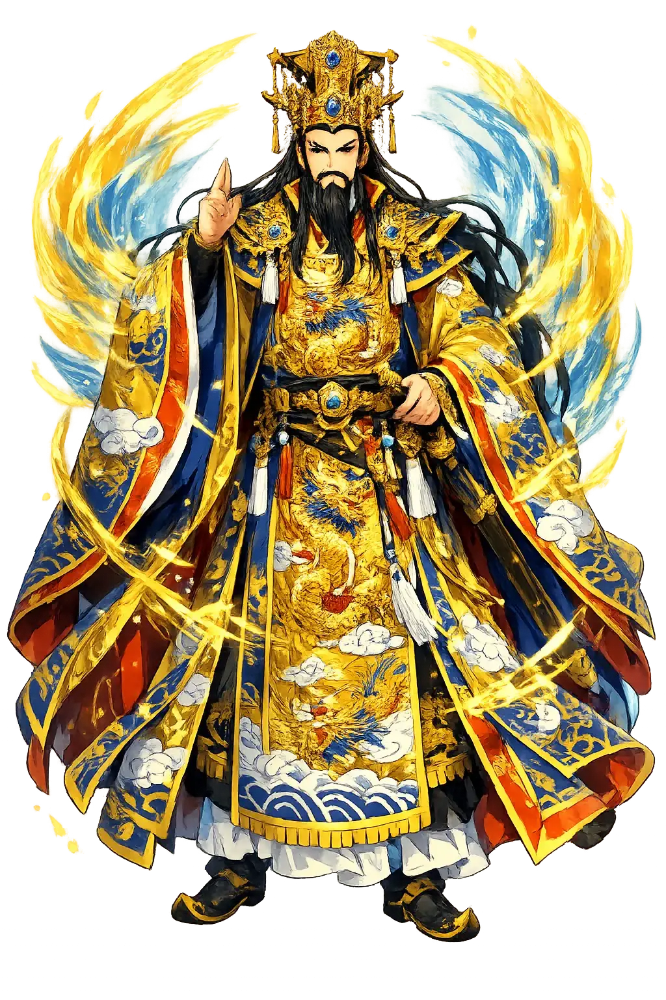
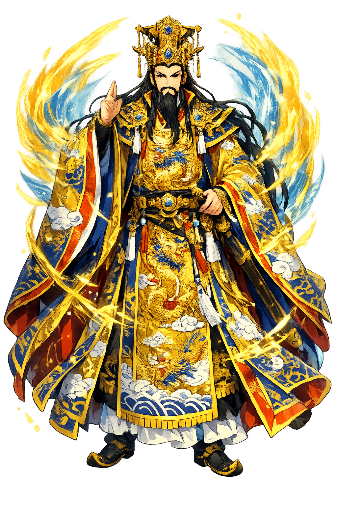

The Authentic Orthography
Heaven, Sky, Cosmic Order · The Heaven that Governs

Unicode restoration and ASCII comparison
天
The name in its original Chinese form. Tiān (天) is attested in the source tradition — “The supreme celestial force and moral order of the cosmos”. Its macron-length vowels carry the full phonetic and orthographic weight of the source tradition.
tian
Reduced to plain tian, the name loses everything that made it specific: macron-length vowels. What remains is an ASCII string that machines can parse but that no longer speaks with its original voice.
Tiān
The Unicode restoration recovers what ASCII flattened. Tiān restores macron-length vowels, returning the name to its original written dignity. The domain encodes to Punycode, but the browser displays the truth.
Tiān.com → xn--tin-2oa.com
The non-ASCII characters in Tiān are encoded while the ASCII remains visible. To the DNS, it is Punycode. To humanity, it is Tiān.
How Tiān is preserved in writing
A bespoke provenance study for Tiān is being prepared by the PUNICODEX scholarly team.
Contribute scholarly provenance →How Tiān was spoken
Cosmic Sovereignty and Moral Order
Tiān 天 is not a creator god in the Western sense. It is Heaven as supreme moral authority: the sky that watches, judges, and withdraws its favour from unworthy kings. From the Shang oracle bones to the Temple of Heaven, Tiān binds political legitimacy to cosmic virtue.
The unmoving axis around which the heavens revolve; Tiān dwells at the northern celestial pivot.
Political legitimacy granted only to virtuous rulers; famine, flood, or defeat signal its loss.
Successor to the Shang supreme deity Shàngdì 上帝, the celestial ancestor who receives royal sacrifice.
The Temple of Heaven in Beijing, where the emperor prayed as the Son of Heaven for cosmic harmony.
Stories of Tiān
The mythology of Tiān is inseparable from the history of Chinese kingship. It is less a corpus of stories than a cosmology: Heaven speaks through weather, dynasty, and the virtue of the ruler.
In Shang times the supreme power was Shàngdì 上帝, the high ancestor-deity above. The Zhou, after overthrowing the Shang, reframed supreme authority as Tiān 天, 'Heaven', making the king the 'Son of Heaven' (tiānzǐ 天子). This theological shift turned victory into moral verdict: the Zhou ruled because Heaven's Mandate (tiānmìng 天命) had passed from the dissolute Shang.
The Duke of Zhou, regent for the young King Cheng, is credited with formulating the Mandate of Heaven as a check on arbitrary power. Rebellion, eclipse, and natural disaster were read as warnings from Heaven; ritual reform and moral renewal could restore the Mandate. The idea endured for three millennia.
At the winter solstice the emperor performed the jiànjì 郊祭, the border sacrifice, at the Temple of Heaven in Beijing. Alone before the circular Altar of Heaven, he offered jade, silk, and a bull, renewing the covenant between the Son of Heaven and the sky. The rite was the hinge of the imperial year.
Tiān asks us to imagine authority without a face. Unlike Olympian gods who quarrel and love, Heaven is a judgement rendered in drought or rain, in the fall of a dynasty or the quiet order of the stars. To meditate on Tiān is to meditate on responsibility: the ruler is answerable not to human contract but to the moral structure of the cosmos itself.
Enter Extended Lore